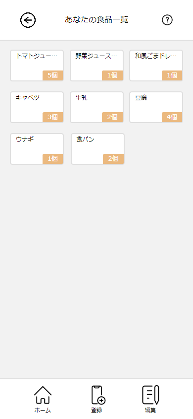
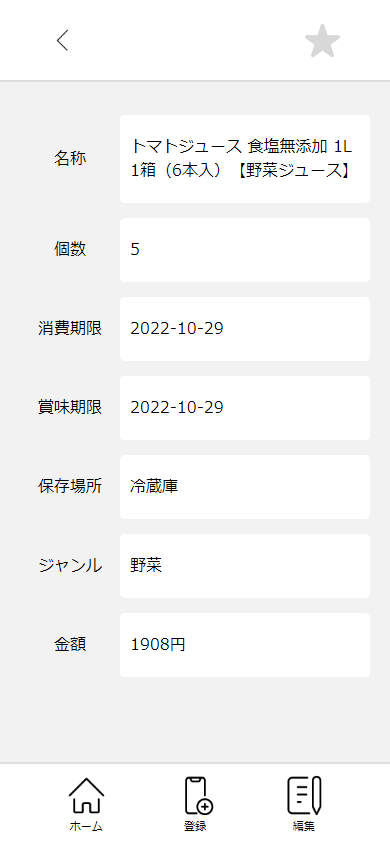
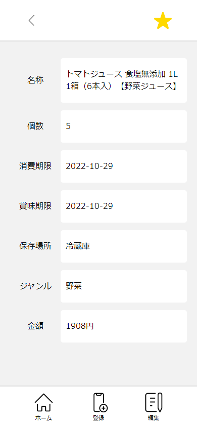

ホームについて

１．ホーム画面が表示されます。

２．食品を選択すると、食品の詳細画面に移動します。

３．右上の「お気に入り」ボタンを押すと、お気に入り食品リストに追加されます。 （お気に入り食品リストは手入力画面で使用できます。）

４．登録されている食品の消費期限が近づくと、食品の色が赤もしくは黄色になり、お知らせしてくれます。
消費期限 1日前～期限切れ期間：赤色
消費期限 3日前～2日前：黄色